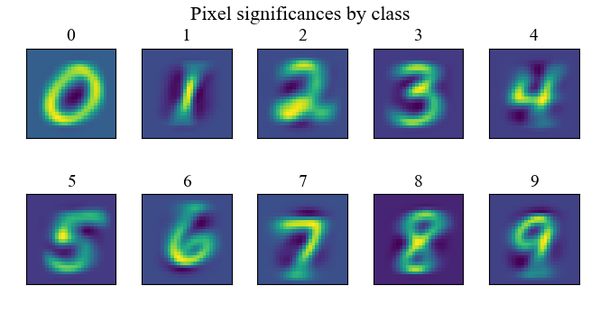
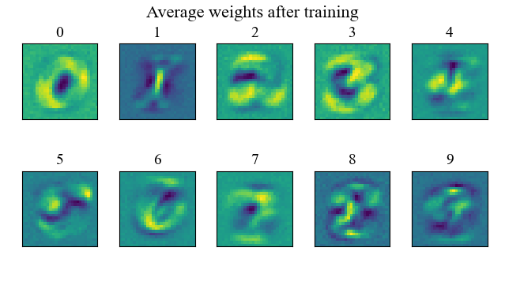

For code to run this experiment yourself, see the Github repository for this project.
Neural networks are extremely good at learning a set of training data. They're accuracy on similar data sets can be astounding. Remarkably, however, seemingly imperceptible changes to these training samples can cause even a stellar network to make astounding errors. Why is this?
Neural networks are trained on data that are just a sampling of the total population. Consequently, a neural network's performance can be considerably fragile. Data from the training set are accurately classified, but marginally different samples are grossly misclassified. Designing adversarial attacks is a process of generating sample variations that are as marginal as possible but which produce as gross of misclassification as possible.
Adversarial samples are generated using one of two typical approaches. The "white box" approach leverages knowledge about the internal workings of the neural network (primarily through knowledge of the weights). It can be very straightforward to build successful white box attacks (as a developer might do to test the robustness of a model), but an adversary will seldom have access to the weights of the network. The "black box" approach is more common when attacking a network about which one has limited knowledge. A common technique to gain some information about the network's internal workings is to perform "queries" on the network. These queries are nothing more than presenting the network with inputs and observing the network's output. Queries can be a powerful way to garner information about the network, but query access can also be severely limited.
An interesting question arises: Can effective adversarial samples be constructed without knowledge of the target network's inner workings?
It is possible to develop a method of generating adversarial attacks for neural networks that we cannot observe or query, perhaps even networks that do not yet exist! Provided we can make some reasonable assumptions about the structure of the to-be target network and have some understanding of the sample space from which its training samples will be drawn, this can even be straightforward. To do this, we can construct a plausible model for the target network and treat its weights as random variables that evolve during the training process. If we are able to calculate the distribution of networks we expect to attack, we can craft a sort of white box attack that promises to be effective against a significant portion of the expected distribution of target networks.
To illustrate this technique, I'll begin with something of an implausible model for the target network: a no-hidden-layer, affine network. While there are drawbacks to this architecture (for a discussion of some in connection to the rank of data, see my course paper "Gradient descent and matrix factorization"), we'll nonetheless examine it because it admits a particularly lucid portrayal of the approach. Let's consider the application of optical character recognition (OCR). Suppose we are in the business of Captcha design. "No Box" adversarial samples of letters might be well suited to our needs, since we are trying to generate samples that will be misclassified by a host of OCR systems to which we have no access (and of which many do not yet exist). Let's restrict the task to classifying images of numerical digits. With this formalism, we are targeting a network of the structure $$ \vec{y} = \text{tanh}\left(W\vec{x} + \vec{b}\right)\tag{1} $$ where \(\vec{y}\) is a \(10 \times 1\) vector with a one-hot encoding that gives the strength of activation for each possible character (assumed to be a digit), \(W\) is a \(10 \times m^{2}\) vector of weights, \(\vec{x}\) is a \(m^{2} \times 1\) vector of pixel activations (for \(m \times m\) pixels), and \(\vec{b}\) is a \(m^{2} \times 1\) bias vector. We'll assume that the network is trained via stochastic gradient descent. In this case, we can express the update, \(\delta W\), that \(W\) would receive in response to a batch of one input, \(\vec{x}\). $$ \delta W_{ij} = \left\lbrace\begin{matrix} \alpha (1 - y_{i})x_{j} & x\text{ is in class }i \\ \alpha (0 - y_{i})x_{j} & x\text{ is not class }i \\ \end{matrix}\right.\tag{2} $$ This branching of \(\delta W\) is simply a reflection of the fact that the correct activation is either a 1 or 0 in our one-hot encoding scheme. Similarly, we find $$ \delta \vec{b} = \left\lbrace\begin{matrix} \alpha (1 - y_{i}) & x\text{ is in class }i \\ \alpha (0 - y_{i}) & x\text{ is not class }i \\ \end{matrix}\right.\tag{3} $$ Let's recall the objective. We want to find a reasonable estimate for the probability density function for every \(W_{ij}\) based on knowledge of the input space. To that end, we'll make some assumption about the initial values for the elements of \(W\) and \(\vec{b}\). In particular, at initialization, we'll assume $$ W_{ij}, b_{k} \sim \mathcal{N}(0, \sigma) \ \forall \ i,j,k \tag{4} $$ This is fairly common practice when initializing a network. From this, we can begin to find the distribution of the elements of the output vector \(\vec{y}\). Noting $$ y_{i} = \sum_{k=1}^{m^{2}}W_{ik}x_{k}\tag{5} $$ Let us define the variable \(^{i}g_{k}=W_{ik}x_{k}\), noting that it is the product of two independent (at initialization) random variables. Since we've assumed \(\text{E}[W_{ij}]=0\), we can conclude that \(\text{E}[^{i}g_{k}]=\text{E}[W_{ik}]\text{E}[x_{k}]=0\). Also, $$ \text{Var}[^{i}g_{k}] = \text{Var}[W_{ik}]\text{Var}[x_{k}] + \text{Var}[W_{ik}]\text{E}[x_{k}]^{2}\tag{6} $$ Importantly, both \(\text{E}[x_{k}]\) and \(\text{Var}[x_{k}]\) can be estimated by sampling from the input space. These values should remained conditioned on the class of \(\vec{x}\), since we will estimate the evolution of the weights matrix based on the expected distribution of training samples across classes. If these figures can be estimated, then \(\text{Var}[^{i}g_{k}]\) can be estimated. Therefore, we now can describe the statistics of the random variable \(y_{i}\). $$ \text{E}[y_{i}]=0,\ \ \text{Var}[y_{i}] = \sum_{k=1}^{m^{2}}\text{Var}\left(^{i}g_{k}\right)\tag{7} $$ where I will reiterate again that \(\text{Var}[^{i}g_{k}]\) is dependent on the class of \(\vec{x}\), and so the class of \(\vec{x}\) should be factored in when estimating the statistics of \(\vec{y}\).
Let's do a sanity check here. After initialization, \(y_{i}\) is nothing more than a weighted sum of zero mean random variables \(W_{ij}\) (with the weights being \(\vec{x}\)). Therefore, from the linearity of expectations we would expect that \(E[y_{i}]=0\), which indeed we have proven.
Let us return to (2) and finally determine \(E[\delta W_{ij}]\). To do this, we will make another assumption, namely, that the target network will see an equal number of each classes. Doing so, we now know the frequency with which each branch of \(W_{ij}\) will be visited. $$ \delta W_{ij} = \left\lbrace\begin{matrix} \alpha (1 - y_{i})x_{j} & \text{Probability }\frac{1}{n} \\ \alpha (0 - y_{i})x_{j} & \text{Probability }\frac{n - 1}{n} \\ \end{matrix}\right.\tag{8} $$ Therefore, we can apply the linearity of expectations once more to obtain the single statement $$ E[\delta W_{ij}] = \frac{1}{n}\left(E[\alpha(1 - ^{i}y_{i})^{i}x_{j}]\right) + \frac{n-1}{n}\left(\sum_{k\neq i}^{n}E[\alpha(0 - ^{k}y_{i})^{k}x_{j}]\right)\tag{9} $$ By the same argument presented after (7), we can identify \((1 - ^{i}y_{i})\) and \(^{i}x_{j}\) as independent random variables (as well as \((1 - ^{k}y_{i})\) and \(^{k}x_{j}\)), and then write $$ E[\delta W_{ij}] = \frac{1}{n}\left(\alpha (1 - E[^{i}y_{i}])E[^{i}x_{j}]\right) + \frac{1}{n}\sum_{k\neq i}^{n}\left(\alpha(0 - E[^{k}y_{i}])E[^{k}x_{j}]\right)\tag{10} $$ If we apply the knowledge that \(E[^{k}y_{i}]=0\ \forall \ i, k\) then we can arrive at the result $$ E[\delta W_{ij}] = \frac{\alpha}{n}E[^{i}x_{j}]\tag{11} $$ With an expectation for each of the weights in the network, we've now reduced the "no-box" attack generation to something of a "white-box" approach where we can leverage some (probabilistic) knowledge about the target network to craft effective attacks. Before we proceed with "white-box" techniques using this model, we should examine whether these theoretical predictions actually hold in experiment.
Using what we've proven above, let's define a notion of significance, \(^{i}\lambda_{j}\), which is the measure of how heavily a network is expected to rely on input \(x_{j}\) when identifying a member of class \(i\). Let us adopt the definition $$ \boxed{^{i}\lambda_{j} = E[^{i}x_{j}] - \frac{1}{n} \sum_{k=1}^{n}E[^{k}x_{j}]}\tag{12} $$ We have the hypothesis that if \(^{i}\lambda_{j}\) is large, \(W_{ij}\) will tend to be large. Significant pixels are those which tend to be only strongly activated for a small number of digits. For a simple example, imagine there was a pixel that only 5's could activate (this is not actually the case). The network would quickly learn that this pixel is the only pixel that needs to be consulted to determine if the image is a 5 (if the pixel in question is the \(i\)th pixel, the network would be rewarded for having a huge \(W(5, i)\)). In the following section, a simple experiment reveals how pixel significance is a strong predictor for the resulting weights.
We can set up a simple experiment in which we initialize many networks, perform some training, and examine the resulting weights. This allows us to test whether pixel significance as defined above is a useful predictor of network weights. For this experiment, we'll use the NIST digit dataset natively supported in Keras. Since the weights matrix \(W\) is \(10 \times 28^{2}\), a nice way to visualize the expectations is to reshape the rows of \(E[W]\) into images.
It is possible to make a lot of intuitive sense of the distribution of pixel significances (Figure 1.). Note that the highest significance (brightest spots) occur in regions where a digit's unique features typically are (features that exist in spaces where most other digits do not have any features). Regions of low significance (dark spots) are those where a digit tends not to have features, but where many other digits tend to have features. These results align closely with the definition of significance above (12), which can be envisioned as a two step process of stamping the average pixel activations for a class, then "unstamping" the average pixel activations across all classes.
I built a Python script that performs many trials of initializing a neural network of architecture (1) with weights by (5). After 10 epochs of trainin across the 60,000 image dataset, I stored the learned weights. After many trials, an average can be shown for the weights that arise (Figure 2). After only 20 sample networks, similarities with the pixel significances are already apparent.
I repeated this experiment averaging across 200 initialized neural networks (Figure 1, top of page).
I've presented a theoretical argument for a notion of input significance for neural networks, and how they can be leveraged to make accurate predictions about the weights that might arise in a neural network during training. Significantly, these predictions do not depend on access to the neural network. This technique allows white-box attacks to be crafted merely by the underlying statistics of the input space. There is much more to explore here, especially how input significance emerges in deep learning networks. However, this simple experiment show that a great deal of knowledge about neural networks can be easily retrieved from analysis of the input space.